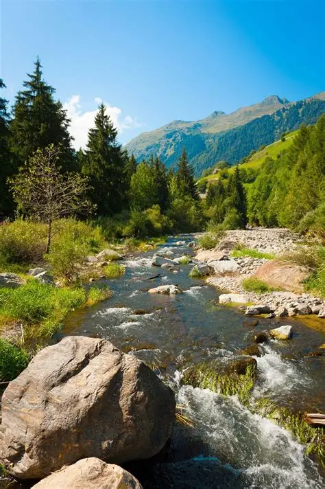

Viajes personalizados
Nuestra agencia está especializada en organizar viajes adaptados a cada cliente. Ofrecemos rutas de turismo cultural, escapadas rurales, rutas de naturaleza y aventuras para todos los gustos.
Destinos destacados
Algunos de los destinos más solicitados incluyen rutas por los ríos del norte de España, excursiones por parques naturales y visitas guiadas a ciudades históricas con gran patrimonio cultural.
Cada viaje combina naturaleza, gastronomía y cultura local. Nuestros guías acompañan a los grupos durante todo el recorrido, asegurando experiencias únicas e inolvidables.
¿Por qué elegirnos?
Trabajamos con proveedores locales y alojamientos de calidad para garantizar comodidad, seguridad y experiencias memorables. La atención personalizada y la planificación detallada son pilares de nuestro servicio.
Si buscas desconectar de la rutina o descubrir nuevos lugares, Viajes Río es tu mejor opción.